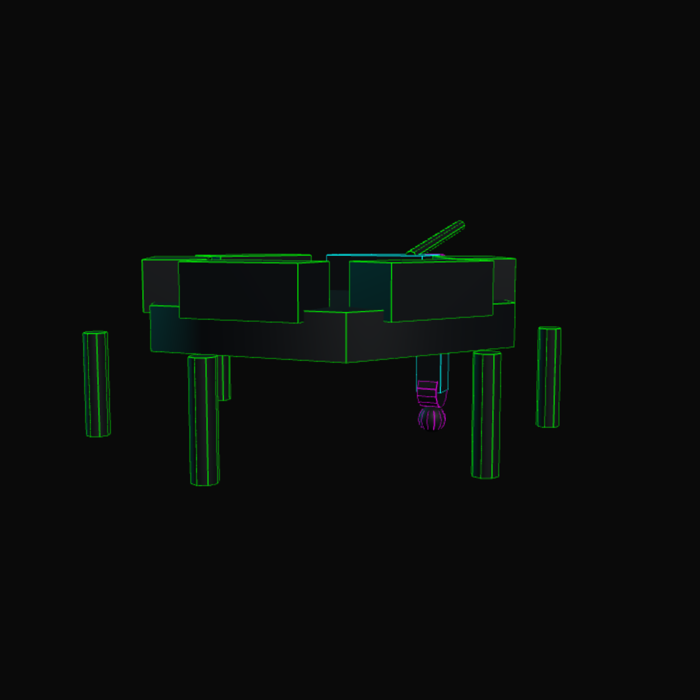

Six legs, eighteen servos, and a deadline in December. This is the running log of a walking robot being built one joint at a time, starting with the only part that matters right now: a single leg that moves.
Next milestone
One leg walkingby 15 Dec 2026
Spent on hardware
CA$24.90of a CA$50 ceiling
Settled
Jointsservo, linkage, power still open
Four joints, two bearings
Drawing the leg out flat settled an argument I had been having with myself about how many bearings this thing actually needs.
The leg as a four-bar. Both servos stay back on the body, at the left; only the links travel.
That is the whole idea of the layout. The motors never leave the body, so the mass swinging around at the end of a lever is printed plastic and an M3 bolt instead of a servo. The drive crank pushes the top link, the top link swings the tibia lever, and the tibia folds down under the femur.
Joints 1 and 2 carry real load. The hip holds up the entire leg; the knee holds up everything below it, and both of them rotate through the whole gait. Those get the 623ZZ bearings. Joints 3 and 4 are the two ends of a pushrod — they take a shove along one axis and barely swing at all. A plain M3 pin through a reamed hole does that job, and it is two fewer parts to stack up inside a joint that is already tight.
Two bearings a leg, six legs, twelve bearings. I ordered fifteen. Three spare is about right for a first print, where one of them always ends up pressed into a hole that turned out oval.
CA$24.90, and a longer list of things I didn't buy
The order came down to two lines. A 400-piece M3 assortment — button-head screws from 6 to 20 mm, nuts, washers — for CA$15.22, and fifteen 623ZZ bearings, 3 mm bore, 10 mm outside diameter, 4 mm wide, for CA$9.68. That is CA$24.90 against a fifty dollar ceiling, before tax and shipping.
The more useful list is what did not go in the basket. No ball links — they are for articulated pushrods, and these are hinges, so all they would add is slop exactly where I do not want it. No smooth shafts, no dowel pins, no shaft collars, no heat-set inserts, no bought spacers. The spacers get printed, because the only thing they have to do is press against the inner race of the bearing and touch nothing else. A normal M3 flat washer is too wide for that: it lands on the shield, and the joint it was supposed to free up stops turning.
So the joint is a stationary M3 bolt doing the work of an axle. The bearing's outer ring sits in the moving printed link, the bolt passes through the fixed fork, a narrow printed sleeve goes either side on the inner race, and a nut clamps that stack without ever touching the shields. Then the link has to still spin freely, or the whole thing gets taken apart again.
A fully threaded bolt is not a precision bearing axle, and I know it. For a first leg that has to prove it can move under load at all, it is good enough, and it costs four dollars instead of forty.
One thing I refuse to assume: that a nominal M3 screw is a good fit in a nominal 3 mm bore. I will measure the actual screw and the actual bearing, print a fit-test coupon, and only then commit dimensions to a real part. The 20 mm screws are provisional for the same reason — two fork walls, a 4 mm bearing, two sleeves and room for a nut add up faster than they look on paper, and 25 mm may turn out to be the honest answer.
What counts as working
Numbers first, so there is something concrete to fail against. “Fast” is not a requirement; a speed measured on a named surface is.
SpeedAt least 0.20 m/s on a flat indoor floor, timed over a 2 m run. 0.40 m/s would be a good day.
MassUnder 1.50 kg assembled, battery included. 1.60 kg gets used as the load case, which is a different number doing a different job.
RuntimeFifteen minutes of actual walking, not fifteen minutes powered on.
ObstacleClear a 20 mm threshold.
SizeRoughly 270 mm across, leg tip to leg tip.
Every one of those is provisional. Writing them down this early is not about being right, it is about having something that can be proved wrong by a stopwatch.
The weight budget is the same kind of guess. Eighteen servos come to 378 g on their own. Battery, 130 to 200. Printed parts, 250 to 450 depending on how brave the infill is. Pi and sensors, 70 to 120. Wiring, power and hardware, 120 to 220. Call it somewhere between 948 g and 1.37 kg — comfortable against the limit, and it will stop being comfortable the first time a real part replaces an estimate.
Mass is worth pinning early because it feeds itself: more battery is more mass, more mass wants stronger servos, stronger servos want more battery. At 1.60 kg standing on three feet, each foot carries about 5.2 N. Walking is worse than standing, and joint torque depends on lever arm and linkage geometry rather than that number alone — but it is the floor to design up from.

Placeholder geometry, with the one leg that is actually being designed drawn out in full. The other five are stubs until it walks.
Still open: the servo itself, horn included, which gets chosen from measured size, torque and speed rather than a spec sheet I liked the look of. Linkage lengths. Final fits. The power budget. The controller plan is a Raspberry Pi doing the thinking and an ESP32 handling gait, possibly one per side, but that is a problem for a robot that already moves.
The rule at the bottom of the doc, which is really a note to myself: a basic moving leg before aesthetic refinements or AI.
Build log, updated from the working document as the design moves. Figures and numbers are provisional until a part has been printed, measured and loaded.